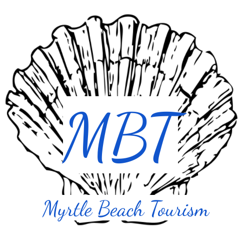

Home |
Facts |
Attractions |
Weather |
Contact Us

Facts! Oh My!
History
- The first residents of Myrtle Beach were the Waccamaw and Winyah tribes.
- In the 1800s and early 1900s, Myrtle Beach was known as "New Town." Myrtle Beach got its name from a contest to decide an official name. Mrs. F.E. Burroughs won this and came up with name due to the wax myrtle trees lining its coast.
- Seaside Inn (1901) was Myrtle Beach's first hotel.
- Myrtle Beach's Train Depot was built in 1936.
Pop Culture
- The country band Alabama was the house band for a place called "The Bowery" in Myrtle Beach.
- The movie Wild Hearts Can't Be Broken and the TV show Dawson's Creek were filmed in Myrtle Beach.
- Christopher Jones and Melissa Wyler are from Myrtle Beach.
- Sport's Illustrated was started in Myrtle Beach.
Geography
- There are 295.79 miles of street in Myrtle Beach.
- The city has 650 acres of public parks and recreation property.
- The beach has 60 miles of coastline.
- There used to be huge sand dunes where Kings Highway passes.